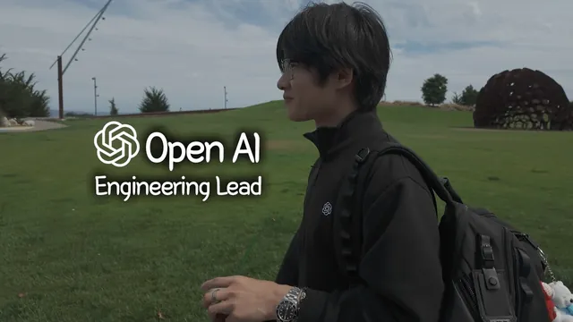

OpenAI 엔지니어가 말하는 AI 시대에 몸값이 폭등중인 사람의 특징 | 시대의 흐름 Ep.1

원본 영상 보기 →
- 호기심은 "다음 단계"까지 가야 몸값이 돼요
- 스킬보다 모델의 빈틈을 아는 게 오래가요
- 배움의 최단 경로는 외부 사용자에게 내놓는 제품이에요
한 줄 요약
AWS에서 시작해 마이크로소프트·페이스북·스타트업을 거쳐 지금은 OpenAI에서 엔지니어링 리드로 일하는 Jay가, AI 시대에 몸값을 올리는 사람의 공통점을 이야기해요. 답은 생각보다 단순했어요. "끝까지 파고드는 호기심, 그리고 직접 만들어 보는 경험"이 결국 기회와 보상을 끌고 온다는 거예요.
전체 내용 정리
AWS에서 OpenAI까지, 연봉은 이렇게 올라갔어요
Jay는 아마존 AWS의 EC2(Elastic Compute Cloud) 부서에서 커리어를 시작했어요. 이후 마이크로소프트에서 컴퓨터 비전 제품을 키웠고 페이스북에서는 모금(fundraising)용 API를 다뤘습니다. 그다음 CRM 스타트업, YC(와이콤비네이터) 출신 스타트업 등 여러 곳을 거쳐 지금은 OpenAI에서 일하고 있어요.
연봉 변화도 꽤 솔직하게 공개했어요. 첫 직장인 아마존에서 약 18만 달러, 애틀랜타의 마이크로소프트에서 20만~23만 달러, 페이스북에서 약 30만 달러였다고 해요. 스타트업 시절엔 주식 가치에 따라 50만 달러 안팎을 오갔고 OpenAI의 구체적인 숫자는 밝히지 않았지만 "괜찮은 수준"이라고만 했어요.
OpenAI 안에서 "OpenAI를 어떻게 쓰는지" 보여 주는 팀이에요
Jay가 속한 곳은 GTM(Go-To-Market, 영업·시장 진출) 조직 안의 이노베이션 랩이에요. 고객사들이 "API도 있고 Codex도 있는 건 알겠는데, 정작 OpenAI는 내부에서 어떻게 쓰나요?"라고 묻거든요. 그 질문에 직접 만들어서 답하는 팀이라고 보면 돼요.
예를 들면 며칠 작업만으로 문서 검토를 자동화하거나, 이메일 발송·회의 내용 기억 같은 GTM 업무의 귀찮은 부분을 자동화해 보여 주는 식이에요. 어카운트 디렉터나 영업 담당자들이 에이전트와 메모리 기능으로 자기 업무를 자동화하도록 돕는 게 이 팀의 일이에요.
몸값을 정하는 건 "다음 단계까지 고민하는 호기심"이에요
몸값을 결정하는 게 기술력인지, 희소성인지, 고른 회사인지 묻자 Jay는 "전부 다"라고 답했어요. 그중에서도 지금 시대에 가장 중요한 건 호기심이라고 강조합니다. 모델의 능력을 어떻게 끌어낼지, AI가 사람들을 실제로 돕게 하려면 어떻게 해야 할지 같은 질문엔 아직 정답이 없거든요.
그래서 몸값이 높은 사람은 이 질문을 떠올리는 데서 멈추지 않는다고 해요. "그럼 거기까지 어떻게 가지? 어떻게 하면 많은 사람에게 멋진 걸 내놓을 수 있지?"까지 한 단계 더 나아가요. Jay는 이게 개발자만의 이야기가 아니라 모든 직군에 해당하고 AI가 사회에 깊이 들어올수록 더 맞는 말이 된다고 봅니다.
같은 아메리카노도 어디서 파느냐에 따라 값이 달라요
실력을 키우는 것과 실력을 더 높게 쳐주는 시장으로 옮기는 것 중 뭐가 중요하냐는 질문에도 Jay는 "둘 다"라고 답했어요. 그리고 아메리카노 비유를 들었습니다. 마트에서 2달러짜리 아메리카노가 체이스 센터 경기장에선 12달러예요. 똑같은 커피인데도요.
그러니 나를 12달러로 쳐주는 곳을 찾는 일도 필요해요. 다만 그 와중에도 계속 배우고 "이건 어떻게 돌아가지?" 하고 내부 원리까지 이해하려는 태도를 놓치면 안 된다는 게 Jay의 이야기예요.
깊게 한 우물을 팔지, 넓게 여러 분야를 경험할지는 정답이 없다고 했어요. Jay 자신은 뭔가에 익숙해지면 지루해지는 편이라 클라우드·AI·컴퓨터 비전을 두루 거쳤고 그게 오히려 지원자로서 매력이 됐다고 해요. 한 분야만 깊게 파는 것도 그 사람만 아는 영역이 생긴다는 점에서 충분히 의미 있는 선택이라고 덧붙였습니다.
트렌드를 먼저 읽는 힘은 "쌓아 둔 맥락"에서 나와요
AWS에서 OpenAI로 흐름을 잘 탄 비결을 묻자, Jay는 맥락(context)을 꼽았어요. ChatGPT가 대중에게 나오기 몇 달 전부터 AI를 깊이 알던 사람들은 이미 "이건 세상을 바꾸겠다"고 느꼈대요. 그들이 미리 알 수 있었던 건 맥락이 많았기 때문이고요.
VR·AR·메타버스처럼 반짝하고 식은 기술과 AI의 차이도 물었는데요. Jay는 그 기술들은 너무 일렀을 뿐 여전히 미래가 있다고 봐요. 다만 AI는 할 수 있는 일이 백만 가지라면 글래스는 십만 가지쯤이라는 비유를 들며 AI는 너무 다재다능해서 실패하기엔 너무 크다고 말합니다. 헤드셋을 써야 하는 메타버스와 달리, AI는 하드웨어든 법률이든 어디에나 들어갈 수 있으니까요.
"프런티어 랩에 있으니 하는 말 아니냐"는 반론도 Jay가 먼저 꺼냈어요. 커리어의 90%는 연구소 밖에 있었다고 해요. 그 시기를 Jay는 "벽 바깥에서 배우기"라고 불러요. 벽 밖에서 충분히 배우면 안으로 들어갈 틈이 반드시 보인다고 장담해요.
OpenAI의 똑똑한 사람들은 "처음부터 끝까지" 이해하려고 해요
OpenAI에 와서 '똑똑한 사람'의 정의가 바뀌었냐는 질문에 Jay는 그렇다고 답했어요. 본인도 호기심이 많다고 생각했는데, 동료들은 그 백 배쯤이었대요. 요청 하나가 AI에 들어가서 어디를 거쳐 어떻게 처리되는지 Jay가 첫 단계만 안다면, 그 사람들은 전 과정을 알고 있었다고 해요. 제품 담당자조차도요.
입사 전에 가장 과소평가했던 건 업무 흐름 속에 AI가 얼마나 깊이 들어가 있는지였다고 해요. 예전 회사들에선 만들고 AI를 좀 쓰고 출시하는 게 보통이었어요. 그런데 OpenAI에서는 설계·개발·출시·사용자 소통·팀 내 소통까지 모든 단계에 AI가 붙어 있었고 Jay는 그동안 자기 능력의 10%만 쓰고 있었다고 느꼈대요.
그래서 Jay의 원칙은 단순해졌어요. "전부 자동화한다." 이메일 보내기가 싫거나 6개월 전 회의 내용을 기억하기 힘들다면 일단 Codex에 맡겨 보고 어디까지 되는지 확인해 보라는 거예요. 못 하면 오히려 놀랄 거라고까지 말했어요.
뭘 배울지 모르겠다면 로보틱스와 버티컬을 보래요
좀 더 구체적인 조언으로 Jay는 로보틱스를 꼽았어요. 시간을 되돌릴 수 있다면 로보틱스 공부에 시간을 더 쓰겠다고 해요. VR 같은 가상 세계가 세상 문제의 일부만 푼다면, 로보틱스는 그보다 몇 배 많은 문제를 풀 수 있다는 게 Jay의 개인적인 의견이에요. 하수구 청소, 바다 정화, 집안의 설거지·빨래를 로봇이 맡으면 사람은 좋아하는 일에 시간을 쓸 수 있겠죠.
또 하나는 버티컬(특정 산업 특화) 제품이에요. Jay는 지금의 GPT-5.6 Sol 같은 기본 모델이 이미 엄청나게 좋은데, 사람들이 그 능력을 100% 쓰지 못하고 있다고 봐요. 그래서 법률·헬스케어·하드웨어처럼 한 분야에 올인해 현재 모델로 뛰어난 제품을 만드는 회사들이 늘고 있다고 해요.
어떤 스킬이 가장 가치 있을지는 단정하기 어렵다고 했어요. 모델이 거의 매일 발전해서, 애써 익힌 스킬을 다음 버전 모델이 그냥 해 버리는 일이 생기거든요. 그래서 Jay는 모델이 어떻게 작동하는지 최대한 많이 알아 두면, 모델이 아직 못 하는 빈틈이 보인다고 말해요. 좋은 회사는 자기 분야의 문제를 잘 알면서 동시에 모델로 뭘 할 수 있고 뭘 못 하는지 아는 사람에게서 나온다고요.
20대로 돌아간다면 일단 "만들어 볼" 거래요
주 50시간을 커리어에 쓸 수 있는 20대 대학생이라면 어떻게 배분하겠냐는 질문에, Jay는 코딩·AI 도구·네트워킹·사이드 프로젝트가 다 섞여야 한다면서도 답은 분명했어요. 만들어 보는 것만큼 잘 배우는 방법은 거의 없다는 거예요.
못 만들어도, 잘 만들어도 상관없대요. 논문을 읽거나 수업을 듣고 잘한다고 느꼈던 건, 실제 외부 사용자에게 제품을 내놓는 순간 다 무너진다고 해요. 사용자는 누구인지, 어떻게 호스팅하고 어떻게 개발할지 같은 질문은 만들다 보면 자연스럽게 생기거든요. 제품이 망해도 괜찮아요. 그 과정에서 얻는 백 가지 통찰이 평생 쓰는 기반이 된다는 게 Jay의 이야기예요. 실제로 Jay가 함께 일한 최고의 엔지니어들은 대개 창업자이거나 제품을 직접 만들어 본 사람들이었다고 해요.
함께 성장할 사람의 중요성도 언급했어요. 혼자 AI를 공부하는 건 멋지지만 고립되기 쉬워요. 연인이든 친한 친구든, 서로 지지하며 같이 크는 관계가 배우는 속도를 크게 끌어올린다고 봅니다.
연봉을 좇지 말라는 말, 후회에서 나왔어요
젊은 사람들이 절대 하지 말았으면 하는 선택으로 Jay는 연봉을 최우선에 두는 것을 꼽았어요. 초반엔 본인도 보상이 가장 중요하다고 생각했대요. 그런데 돌아보면, 훌륭한 엔지니어가 돈을 잘 버는 경우는 흔해도 돈을 우선한 사람이 수백만 명에게 영향을 주려는 엔지니어보다 더 버는 경우는 드물대요.
"지금 그 자리에 있으니 쉽게 하는 말"로 들릴 수 있다는 것도 Jay는 인정했어요. 그래도 초반 몇 년을 보상에 과하게 맞춘 걸 후회한다고 해요. 그 시간을 탄탄한 엔지니어가 되는 데 썼다면 보상까지 포함해 훨씬 큰 결과가 돌아왔을 거라서, 지금도 그때를 만회하려 노력 중이래요. 멘티들에게도 똑같이 말한다고 해요. "과정을 믿어요. 배우는 데 집중하면 따라옵니다."
아침의 Jay와 밤의 Jay가 달라야 해요
이미 높은 보상을 받는데도 계속 달리는 이유를 묻자, Jay는 자기만의 원칙을 소개했어요. 아침에 일어난 Jay와 그날 밤 잠드는 Jay가 조금이라도 달라져 있어야 한대요. 꼭 AI가 아니어도 돼요. 공원이 어떻게 지어졌는지 알게 되기만 해도, 밤의 Jay는 공원 짓는 법을 아는 사람이 되니까요.
인생에서 가장 힘들었던 순간은 자기가 얼마나 모르는지 깨달았을 때였다고 해요. 다섯 살부터 코딩하고 세계적인 상을 받은 사람들 사이에서 심한 임포스터 신드롬(가면 증후군)을 겪었대요. 그런데 Jay는 그 디스트레스(distress, 나쁜 스트레스)를 유스트레스(eustress, 동기가 되는 좋은 스트레스)로 바꾸는 법을 배웠어요. "모르는 게 이렇게 많다니"를 "이렇게 배울 게 많다니"로 바꾼 거죠. 그 사람들이 아는 걸 나라고 못 배울 이유는 없으니까요.
마지막으로 올해 서른이 된 Jay가 모두에게 던진 질문은 이거예요. "나는 세상에 어떤 영향을 주고 싶은가?" 삶은 너무 빨라서, 가끔은 멈춰서 숨을 고르고 이 질문을 던져 봐야 한다고요. 그 짧은 멈춤이 앞으로를 꽤 많이 바꿀 수 있다고요.
핵심 인사이트
- 호기심은 "다음 단계"까지 가야 몸값이 돼요: Jay가 말하는 호기심은 궁금해하는 데서 끝나지 않아요. "그럼 어떻게 만들지, 어떻게 많은 사람에게 내놓지"까지 이어질 때 시장이 알아봐 준다는 게 핵심이에요. 정답이 없는 AI 분야라서 더 그렇고요.
- 스킬보다 모델의 빈틈을 아는 게 오래가요: 모델이 거의 매일 좋아지니 특정 스킬은 금방 자동화될 수 있어요. 대신 모델이 뭘 할 수 있고 뭘 못 하는지 꾸준히 아는 사람은 법률·헬스케어처럼 아직 비어 있는 버티컬 기회를 먼저 봅니다.
- 배움의 최단 경로는 외부 사용자에게 내놓는 제품이에요: 읽고 듣는 공부는 제품을 실제로 내놓는 순간 많은 부분이 무너져요. 망해도 그 과정에서 얻는 통찰이 기반이 되고 Jay가 본 최고의 엔지니어들도 대부분 직접 만들어 본 사람들이었어요.
오늘 당장 해볼 것
- 매주 반복하는 귀찮은 업무 하나(이메일 회신 초안, 지난 회의 내용 찾기 등)를 골라 Codex나 Claude 같은 AI에 그대로 맡겨 보세요. Jay 말처럼 "못 하면 놀랄" 정도인지 직접 확인하면 내가 AI를 몇 %나 쓰고 있었는지 감이 옵니다.
- 지금 쓰는 AI 도구가 내 업무에서 못 하는 것 세 가지를 메모해 보세요. 그 빈틈이 바로 Jay가 말한 "모델의 갭"이고 내 분야 지식과 겹치는 지점에서 새 상품이나 서비스 아이디어가 나옵니다.
- 이번 주에 아주 작은 결과물 하나를 만들어서 나 말고 다른 사람 한 명에게 써 보게 하세요. 랜딩 페이지든 자동화 하나든 괜찮아요. 남이 쓰는 순간 생기는 질문들이 책으로 배우는 것보다 훨씬 많은 걸 알려 줍니다.